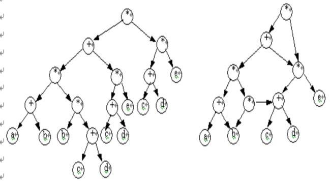
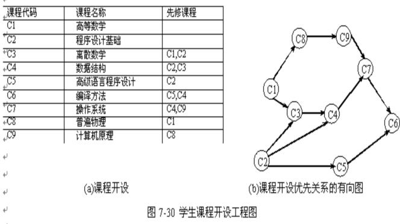

|
|
第七章 图
§7.5有向无环图及其应用
一个无环的有向图称做有向无环图（directed acycline praph）。简称DAG图。DAG图是一类较有向树更一般的特殊有向图。
有向无环图是描述含有公共子式的表达式的有效工具。例如下述表达式：
((a+b)*(b*(c+d)+(c+d)*e)*((c+d)*e)
可以用第六章讨论的二叉树来表示。仔细观察该表达式，可发现有一些相同的子表达式，如(c+d)和(c+d)*e等，在二叉树中，它们也重复出现。若利用有向无环图，则可实现对相同子式的共享，从而节省存储空间。例如图所示为表示同一表达式的有向无环图。

检查一个有向图是否存在环要比无向图复杂。对于无向图来说，若深度优先遍历过程中遇到回边（即指向已访问过的顶点的边），则必定存在环；而对于有向图来说，这条回边有可能是指向深度优先生成森林中另一棵生成树上顶点的弧。但是，如果从有向图上某个顶点v 出发的遍历，在dfs(v)结束之前出现一条从顶点u到顶点v的回边，由于u 在生成树上是v的子孙，则有向图必定存在包含顶点v和u的环。
有向无环图是描述一项工程或系统的进行过程的有效工具。除最简单的情况之外，几乎所有的工程（project）都可分为若干个称作活动（activity）的子工程，而这些子工程之间，通常受着一定条件的约束，如其中某些子工程的开始必须在另一些子工程完成之后。对整个工程和系统，人们关心的是两个方面的问题：一是工程能否顺利进行：二是估算整个工程完成所必须的最短时间。以下两小节将详细介绍这样两个问题是如何通过对有向图进行拓扑排序和关键路径操作来解决的。
7.5.1拓扑排序
通常我们把计划、施工过程、生产流程、程序流程等都当成一个工程，一个大的工程常常被划分成许多较小的子工程，这些子工程称为活动，这些活动完成时，整个工程也就完成了。例如，计算机专业学生的课程开设可看成是一个工程，每一门课程就是工程中的活动，图7-30给出了若干门所开设的课程，其中有些课程的开设有先后关系，有些则没有先后关系，有先后关系的课程必须按先后关系开设，如开设数据结构课程之前必须先学完程序设计基础及离散数学，而开设离散数学则必须先并行学完高等数学、程序设计基础课程。

在图中，我们用一种有向图来表示课程开设，在这种有向图中，顶点表示活动，有向边表示活动的优先关系，这有向图叫做顶点表示活动的网络(Actire On Vertices)简称为AOV网。
在AOV网中，<i,j>有向边表示i活动应先于j活动开始，即i活动必须完成后，j活动才可以开始，并称i为j的直接前驱，j为i的直接后继。这种前驱与后继的关系有传递性，此外，任何活动i不能以它自己作为自己的前驱或后继，这叫做反自反性。从前驱和后继的传递性和反自反性来看，AOV网中不能出现有向回路(或称有向环)。在AOV网中如果出现了有向环，则意味着某项活动应以自己作为先决条件，这是不对的，工程将无法进行。对程序流程而言，将出现死循环。
因此，对给定的AOV网，应先判断它是否存在有向环。判断AOV网是否有有向环的方法是对该AOV网进行拓扑排序，将AOV网中顶点排列成一个线性有序序列，若该线性序列中包含AOV网全部顶点，则AOV网无环，否则，AOV网中存在有向环，该AOV网所代表的工程是不可行的。
拓扑排序
▲:下面将介绍怎样实现拓扑排序,实现步骤如下：
（1）在AOV网中选一个入度为0的顶点且输出之；
（2）从AOV网中删除此顶点及该顶点发出来的所有有向边；
（3）重复（1）、（2）两步，直到AOV网中所有顶点都被输出或网中不存在入度为0的顶点。
从拓扑排序步骤可知，若在第3步中，网中所有顶点都被输出，则表明网中无有向环，拓扑排序成功。若仅输出部分顶点，网中已不存在入度为0的顶点，则表明网中有有向环，拓扑排序不成功。例如，对图7-31中AOV网，可以得到的拓扑序列有：1,2,3,4,5或2,1,3,4,5。因此，一个AOV网的拓扑序列是不唯一的。
7.5.2 关键路径
由于AOE网中的某些活动能够同时进行，故完成整个工程所必须花费的时间应该为源点到终点的最大路径长度（这里的路径长度是指该路径上的各个活动所需时间之和）。具有最大路径长度的路径称为关键路径。关键路径上的活动称为关键活动。关键路径长度是整个工程所需的最短工期。这就是说，要缩短整个工期，必须加快关键活动的进度。
利用AOE网进行工程管理时要需解决的主要问题是：
①计算完成整个工程的最短路径。
②确定关键路径，以找出哪些活动是影响工程进度的关键。
关键路径法是采用边表示活动(Activity On Edge)的网络，简称为AOE网络。
AOE网络是一个带权的有向无环路图，其中，每个顶点代表一个事件(Event)，事件说明某些活动或某一项活动的完成，即阶段性的结果。
离开某顶点的各条边所代表的活动，只有在该顶点对应的事件出现后才能开始。
权值表示活动持续的时间。
▲:通常利用AOE网络可以研究以下两个问题：
(1) 完成整个工程至少需要多少时间？
(2) 哪些活动是影响工程进度的关键？
关键路径
完成工程所需的时间就是从开始点起进行到结束点止所需的时间。
路径长度是指沿路径各边的权值之和，也就是这些边所代表的活动所需时间之和。
完成整个工程所需的时间取决于从开始点到结束点的最长路径长度，此长度最大的路径叫做关键路径。
分析关键路径的目的是辨别哪些是关键活动，以便争取提高关键活动的效率，缩短整个工期。
▲:在描述关键路径的算法时
设活动ai由弧<j,k>表示，要确定如下几个相关的量：
(1) 事件Vj的最早出现时间和活动的最早开始时间：从源点V1到某顶点Vj的最长路径长度叫作事件j的最早出现时间，表示成ev[j]。顶点Vj的最早出现时间ev[j]决定了从Vj指出的各条边所代表活动的最早开始时间，因为事件j不出现，它后面的各项活动就不能开始。我们以e[i]表示活动ai的最早开始时间。显然e[i]= ev[j] 。
(2) 活动ai的最迟开始时间：在不影响整个工程按时完成的前提下，此项活动最迟的必须开始时间，表示成L[i]。
只要某活动ai有L[i]=e[i]的关系，我们就称ai为关键活动。关键活动只允许在一个确定的时间开始，再早，它前面的事件还没出现，尚不能开始；再晚，又会延误整个工程的按时完成。由于完成整个工程所需的时间是由关键路径上各边权值之和所决定的，显然关键路径上各条边所对应的活动都是关键活动。
(3) 事件j的最迟出现时间：即事件j在不延误整个工程的前提下允许发生的最迟时间，表示为Lv[j]。对某条指向顶点Vj的边所代表的活动ai可得到：
L[i]= Lv[j]-(活动ai所需时间)
也就是活动ai必须先于它后面事件的最迟出现时间开始，提前的时间为进行此活动所需的时间。
确定关键路径的方法就是要确定e[i]=L[i]的关键活动。
假设以w[j,k]表示有向边<j,k>的权，即此边对应的活动所需的时间，为了求AOE网络中活动ai的最早开始时间e[i]和活动ai的最迟开始时间L[i]，先要求得顶点Vk的事件Vk的最早出现时间ev[k]和最迟出现时间Lv[k] 。
此公式的意义为：由从Vj顶点指出的各边所代表的活动中取需最早开始的一个开始时间作为Vj的最迟出现时间。
无论是向汇点递推还是向源点递推，都必须按一定的顶点顺序进行。
对所有的有向边，向汇点递推是先求出尾顶点的ev值，再求头顶点的ev值；向源点递推则相反，先求头顶点的Lv值，再求尾顶点的Lv值。
为此，可利用上节介绍的拓扑排序得到的顶点次序进行向汇点的递推，向源点的递推按相反的顺序进行即可，不必再重新排序。
关键路径算法
(1) 输入e条有向边<j,k>，建立AOE网络的存储结构；
(2) 从源点出发，令ev[1]=0，按拓扑排序的序列求其余各顶点的最早出现时间ev[i](2≤i≤n)。若拓扑排序序列中的顶点个数小于网络中的顶点数n，则说明网络中存在环路，算法中止执行；否则执行(3)；
(3) 从汇点Vn出发，令Lv[n]=ev[n]，按逆拓扑排序的序列求其余各顶点的最迟出现时间 Lv[i](n-1≥i≥1)；
(4) 根据各顶点的ev和Lv值求每条有向边ai的最早开始时间e[i]和最迟开始时间L[i]。若某有向边ai满足e[i]=L[i],则为关键活动。
|
|